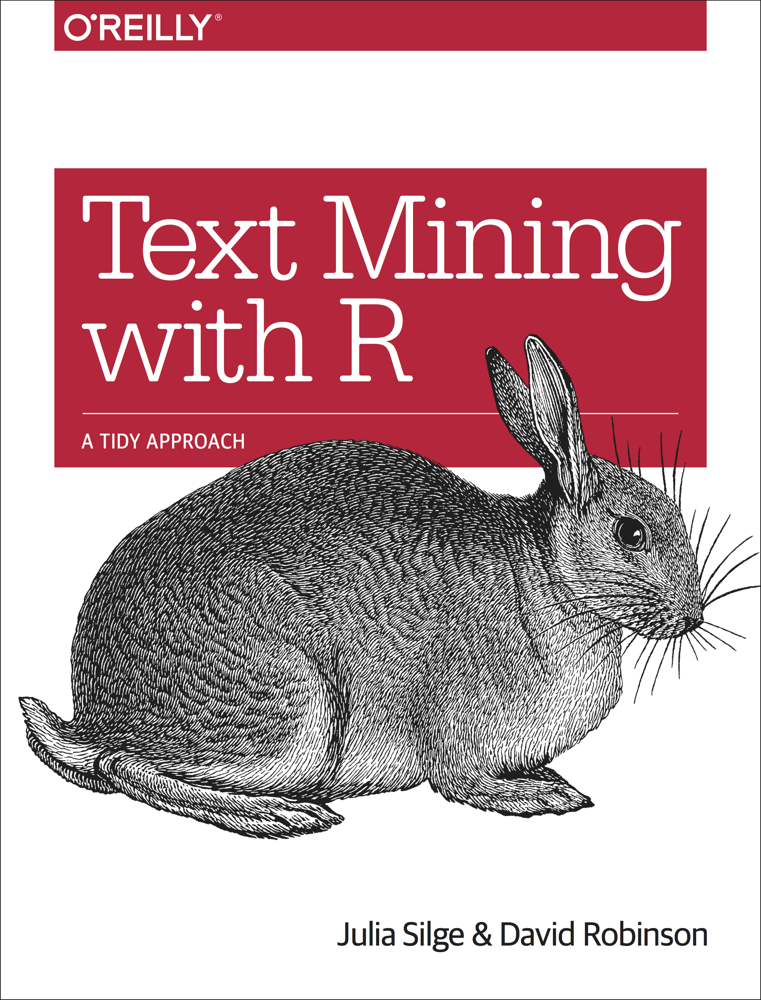

Good Enough Practices for Text Analysis
Text as Data (TADA ü™Ñ)
Julia Silge
6 October 2022
Hello!



Good enough practices in scientific computing
Greg Wilson, Jennifer Bryan, Karen Cranston, Justin Kitzes, Lex Nederbragt, Tracy K. Teal
Good enough practices for text analysis
Data management
Data management for bunnies
bunny_tweets
#> # A tibble: 300 × 3
#> created_at id full_text
#> <dttm> <dbl> <chr>
#> 1 2022-09-23 01:45:52 1.57e18 "Can’t have only one rabbit in our story because…
#> 2 2022-09-24 17:00:28 1.57e18 "George hanging out with his favorite photograph…
#> 3 2022-09-28 05:29:42 1.57e18 "Watercolor Bunny Clipart https://t.co/bg2xYzFhL…
#> 4 2022-09-24 08:59:06 1.57e18 "So many cute bags, choose one to take homeüòçüòç\‚Ķ
#> 5 2022-09-24 12:01:49 1.57e18 "In some folklore, #rabbits are tricksters that …
#> 6 2022-09-20 16:10:24 1.57e18 "she works haaard for the bunny üé∂\n@RabbitLover‚Ķ
#> 7 2022-09-23 12:20:17 1.57e18 "Dasher and Fiona are friendly, young #rabbits f…
#> 8 2022-09-25 00:37:24 1.57e18 "Thx the buyer!ü•∞üê∞\n#rabbits #bunny #bunnies \n‚Ķ
#> 9 2022-09-24 10:45:05 1.57e18 "#InternationalRabbitDay reminder that rabbits …
#> 10 2022-09-28 19:02:00 1.58e18 "Desiree the bun is the cutest thing you'll see …
#> # … with 290 more rowsSave the raw data!
Data management for bunnies
library(tidytext)
bunny_tweets %>%
unnest_tokens(word, full_text, token = "tweets")
#> # A tibble: 7,481 × 3
#> created_at id word
#> <dttm> <dbl> <chr>
#> 1 2022-09-23 01:45:52 1.57e18 cant
#> 2 2022-09-23 01:45:52 1.57e18 have
#> 3 2022-09-23 01:45:52 1.57e18 only
#> 4 2022-09-23 01:45:52 1.57e18 one
#> 5 2022-09-23 01:45:52 1.57e18 rabbit
#> 6 2022-09-23 01:45:52 1.57e18 in
#> 7 2022-09-23 01:45:52 1.57e18 our
#> 8 2022-09-23 01:45:52 1.57e18 story
#> 9 2022-09-23 01:45:52 1.57e18 because
#> 10 2022-09-23 01:45:52 1.57e18 theyre
#> # … with 7,471 more rowsCreate analysis-friendly data
Data management for bunnies
library(tidytext)
tidy_bunnies <-
bunny_tweets %>%
unnest_tokens(word, full_text, token = "tweets")
tidy_bunnies
#> # A tibble: 7,481 × 3
#> created_at id word
#> <dttm> <dbl> <chr>
#> 1 2022-09-23 01:45:52 1.57e18 cant
#> 2 2022-09-23 01:45:52 1.57e18 have
#> 3 2022-09-23 01:45:52 1.57e18 only
#> 4 2022-09-23 01:45:52 1.57e18 one
#> 5 2022-09-23 01:45:52 1.57e18 rabbit
#> 6 2022-09-23 01:45:52 1.57e18 in
#> 7 2022-09-23 01:45:52 1.57e18 our
#> 8 2022-09-23 01:45:52 1.57e18 story
#> 9 2022-09-23 01:45:52 1.57e18 because
#> 10 2022-09-23 01:45:52 1.57e18 theyre
#> # … with 7,471 more rowsRecord all steps used to process your data
Software
Good enough software engineering
Readable
Reusable
Testable
Modular
Learn more about software development from resources like The Pragmatic Programmer
Use appropriate data structures
Use well-maintained software
library(stm)
bunny_topic_model <- stm(sparse_bunnies, K = 2, verbose = FALSE)
summary(bunny_topic_model)
#> A topic model with 2 topics, 300 documents and a 2767 word dictionary.
#> Topic 1 Top Words:
#> Highest Prob: #rabbits, #rabbit, #bunny, the, of, a, rabbit
#> FREX: #catsoftwitter, happy, #bunnyboy, #design, #dogsoftwitter, üê∂, #handmade
#> Lift: own, @rabbitloversusa, #rabbit, #catsoftwitter, #dogsoftwitter, üê∂, auction
#> Score: #catsoftwitter, #handmade, #wallart, #decorations, #designinspiration, #designresources, #designthinking
#> Topic 2 Top Words:
#> Highest Prob: the, #rabbits, and, to, a, you, is
#> FREX: üÜò, shipping, care, just, #burrowspot, will, üî•
#> Lift: #burrowspot, nothing, üí©, bedtime, comical, find, fine
#> Score: üÜò, shipping, 5, ‚¨ÜÔ∏è, ‚¨áÔ∏è, #giftideas, ‚úàCollaboration
Make collaboration easier
Create
READMEandCONTRIBUTINGfilesDocument what needs to be done and planned next steps
Be clear about communication strategies
Choose a license
Almost every choice you make in your text analysis project supports or detracts from healthy collaboration
Project organization
Organize your text analysis project
Project Structure by Danielle Navarro
Names matter!
- Machine readable
- Human readable
- Consider order, sorting, and searching
Organize your text analysis project
Project Structure by Danielle Navarro
Names matter!
traintopicmodel.RUntitled43.ipynbmytweets.csv
Organize your text analysis project
Project Structure by Danielle Navarro
Names matter!
Bunny Tweet Data.csvtraintopicmodel (1).Rtraintopicmodel.RUntitled43.ipynbmytweets.csv
Organize your text analysis project
Project Structure by Danielle Navarro
Names matter!
bunny-tweets.csv01-train-topic-model.R02-train-topic-model.R03-evaluate-model.ipynb2022-10-06-tweets.csv
Each project should be a folder
Organize your text analysis project
Project Structure by Danielle Navarro
.
├── README.md
├── bunny-topic-model.rds
├── bunny-tweets.txt
├── evaluate-model.R
├── parse-breeds.R
├── parse-test.R
├── rabbit-breeds.json
├── rabbits-on-social-media.qmd
├── rabbits-on-social-media.pdf
├── train-model.R
└── work.R.
├── README.md
├── 01-data
│ │ ├── raw-data
│ │ │ ├── bunny-tweets.txt
│ │ │ └── rabbit-breeds.json
│ │ ├── intermediate-data
│ │ │ ├── bunny-topic-model.rds
│ │ │ └── breeds-parsed.csv
├── 02-analysis
│ ├── 01-parse-breeds.R
│ ├── 02-tokenize-eda.R
│ ├── 03-train-model.R
│ └── 04-evaluate-model.R
└── 03-paper
├── rabbits-on-social-media.qmd
└── rabbits-on-social-media.pdfKeeping track of changes

final_final2_really_final
Happy Git and GitHub for the useR by Jenny Bryan
Version control systems have a steep learning curve
VCS automate steps to correctly track changes
VCS also enforce these steps
Adoption of VCS supports reproducibility and healthy collaboration
What not to version?
Data that is “large” (10s of MB)
Sensitive or private data
Passwords, API keys, etc
What about the raw data, intermediate data files, binary files?
Manuscripts
Treat your manuscript like software
Manuscript as software
The Plain Person’s Guide to Plain Text Social Science by Kieran Healy
Write prose like you write code
Embrace plain text formats
Use version control
Manuscript as software
## Term frequency in Jane Austen's novels
Let's start by looking at the published novels of Jane Austen and examine first term frequency, then tf-idf. We can start just by using dplyr verbs such as `group_by()` and `join()`. What are the most commonly used words in Jane Austen's novels? (Let's also calculate the total words in each novel here, for later use.)
```{r}
library(dplyr)
library(janeaustenr)
library(tidytext)
book_words <- austen_books() %>%
unnest_tokens(word, text) %>%
count(book, word, sort = TRUE)
total_words <- book_words %>%
group_by(book) %>%
summarize(total = sum(n))
book_words <- left_join(book_words, total_words)
book_words
```
There is one row in this `book_words` data frame for each word-book combination; `n` is the number of times that word is used in that book and `total` is the total words in that book. The usual suspects are here with the highest `n`, "the", "and", "to", and so forth. In Figure \@ref(fig:plottf), let's look at the distribution of `n/total` for each novel, the number of times a word appears in a novel divided by the total number of terms (words) in that novel. This is exactly what term frequency is.
```{r}
library(ggplot2)
ggplot(book_words, aes(n/total, fill = book)) +
geom_histogram(show.legend = FALSE) +
xlim(NA, 0.0009) +
facet_wrap(~book, ncol = 2, scales = "free_y")
```
There are very long tails to the right for these novels (those extremely rare words!) that we have not shown in these plots. These plots exhibit similar distributions for all the novels, with many words that occur rarely and fewer words that occur frequently.
## Zipf's law
Distributions like those shown in Figure \@ref(fig:plottf) are typical in language. In fact, those types of long-tailed distributions are so common in any given corpus of natural language (like a book, or a lot of text from a website, or spoken words) that the relationship between the frequency that a word is used and its rank has been the subject of study; a classic version of this relationship is called Zipf's law, after George Zipf, a 20th century American linguist.
Zipf's law states that the frequency that a word appears is inversely proportional to its rank.
Since we have the data frame we used to plot term frequency, we can examine Zipf's law for Jane Austen's novels with just a few lines of dplyr functions.
```{r}
freq_by_rank <- book_words %>%
group_by(book) %>%
mutate(rank = row_number(),
`term frequency` = n/total) %>%
ungroup()
freq_by_rank
```Learn more
Read the original paper by Wilson et al
Check out my books!
Thanks!
Thanks!
Rabbit pictures by: